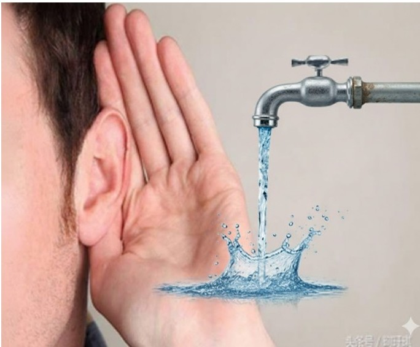
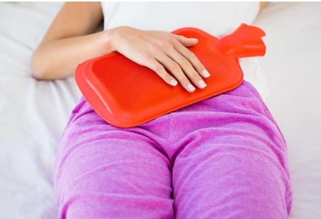
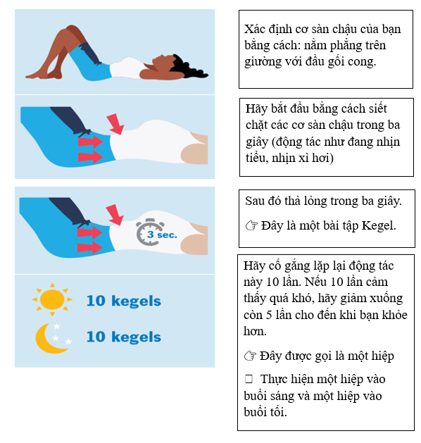

MỤC TIÊU CỦA BÀI TẬP
- Kích thích phản xạ đi tiểu tự nhiên
- Phục hồi trương lực bàng quang
- Giảm phụ thuộc vào sonde tiểu
- Phòng ngừa nhiễm trùng và bí tiểu tái phát
1. TẬP ĐI TIỂU THEO GIỜ
Nguyên tắc: Không đợi buồn tiểu mới đi. Nên đi mỗi 2–3 giờ/lần.
Tư thế đúng:
- Nam: Ngồi hoặc đứng.
- Nữ: Ngồi bô hoặc bồn cầu.
- Lưu ý: Nằm nếu chưa thể ngồi dậy được. Đi nhẹ nhàng, không rặn mạnh.
📌 Nếu chưa tiểu được, hãy nghỉ ngơi và thử lại sau 15–20 phút.
2. CÁCH KÍCH THÍCH ĐI TIỂU AN TOÀN

Nghe tiếng nước chảy

Chườm ấm bụng dưới (10–15p)
Xoa nhẹ vùng trên xương mu theo vòng tròn
3. BÀI TẬP CƠ SÀN CHẬU (KEGEL)
Giúp kiểm soát tiểu tiện tốt hơn bằng cách làm khỏe cơ sàn chậu.
- Thắt chặt cơ vùng chậu (như đang nhịn tiểu).
- Giữ trong 3-5 giây.
- Thả lỏng 3-5 giây.
- Lặp lại 10 lần mỗi đợt.

4. VẬN ĐỘNG NHẸ SAU PHẪU THUẬT
Vận động giúp bàng quang hoạt động tốt hơn. Hãy ngồi dậy sớm và đi lại nhẹ nhàng theo hướng dẫn của nhân viên y tế. Tránh nằm bất động quá lâu.
NHỮNG ĐIỀU KHÔNG NÊN LÀM
❌ Không rặn mạnh khi đi tiểu.
❌ Không tự ý kẹp hoặc tháo sonde tiểu.
❌ Không uống quá nhiều nước cùng lúc để “ép tiểu”.
KHI NÀO CẦN BÁO Y TẾ NGAY?
- Không đi tiểu được sau 6 giờ.
- Căng tức bụng dưới, đau nhiều không giảm.
- Tiểu buốt, tiểu máu hoặc có sốt cao.
Ghi nhớ: Tập tiểu đúng cách giúp hồi phục nhanh hơn và tránh biến chứng.
Nếu có thắc mắc, hãy liên hệ ngay với nhân viên y tế.